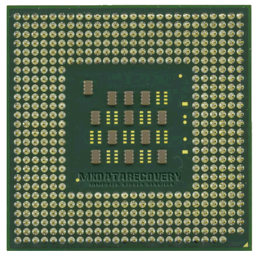
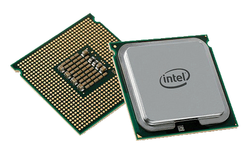

Централния процесор
Ролята на централния процесор (ЦП,
CPU -
Central processing unit) е да изпълнява всички стартирани от потребителя
програми, да обработва данни предоставени му от потребителя, да управлява
хардуера и др. ЦП е изграден от две части:

Аритметикологическо устройство (АУ) – електронни схеми, които
изпълняват операции (аритметични и логически) над данни представени в двоичен
вид;
Управляващо устройство (УУ) – ръководи работата на компютъра,
като извлича от
RAM
програмна инструкция и необходимите за нея данни и ги подава на схемата АУ,
която реализира съответната операция и стартира нейното изпълнение;
Една от най-важните характеристики е работната честота на ЦП. Днес тя се измерва
в гигахерци (2-3GHz). Възможност за увеличаване на скоростта на ЦП е
специализирана памет, достъпа до която е много бърз – кеш паметта (cache).
Тя е разделена в повечето случаи на две нива, наречени
L1
и
L2.
Съвременните
ЦП разполагат обикновено с около
8-12MB
кеш памет.

Технология, която също така увеличава скоростта и ефективността на ЦП е и
съчетаването на два и повече процесора в един – многоядрови процесори. От
съществено значение за ЦП е и фирмата производител. На пазара се конкурират
основно две фирми:
Intel
с
известната серия Pentium, както и Celeron,
Atom;
AMD с процесорите
Duron, Athlon, Barcelona,
Phenom
и др.